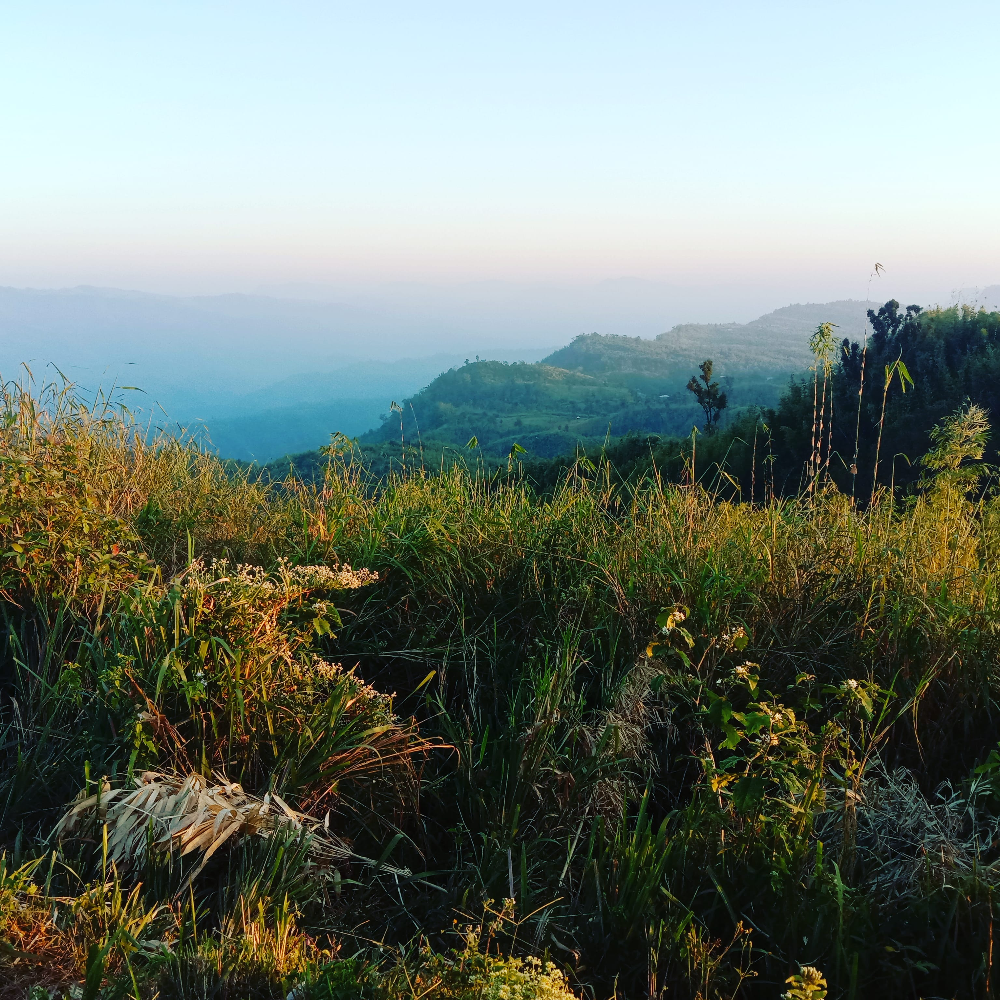

Keokradong is a peak located in Bandarban, Bangladesh, with an elevation of 986 metres. Some sources claim it as the highest point of Bangladesh. On the top of Keokradong there is a small shelter and a signboard put up by Bangladesh Army proclaiming the elevation to be 967 metres.
